Estado
Plurinacional de Bolivia
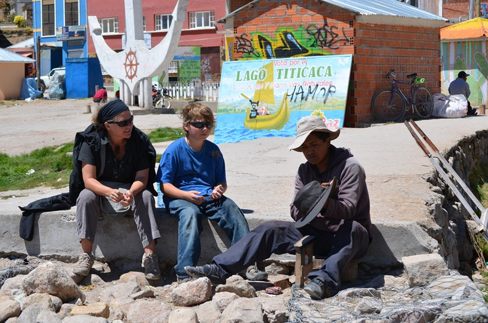 |
| l histoire émouvante de ce jeune Péruvien venu a Copacabana pour travailler |
.JPG){kind=link}
.JPG){kind=link}
.JPG){kind=link}
Les indigènes sont majoritaires en Bolivie. Ils représentent 69 % de la population. Parmi ceux-ci, 30 % sont des Quechuas et 25 % des Aymaras. Les autres groupes indigènes sont des Chiquitano, des Guaranis, des Arawaks, des Ignaciano, des Chimané, des Movima, des Trinitario, des Itonama, des Tanaca, etc.
.JPG){kind=link}
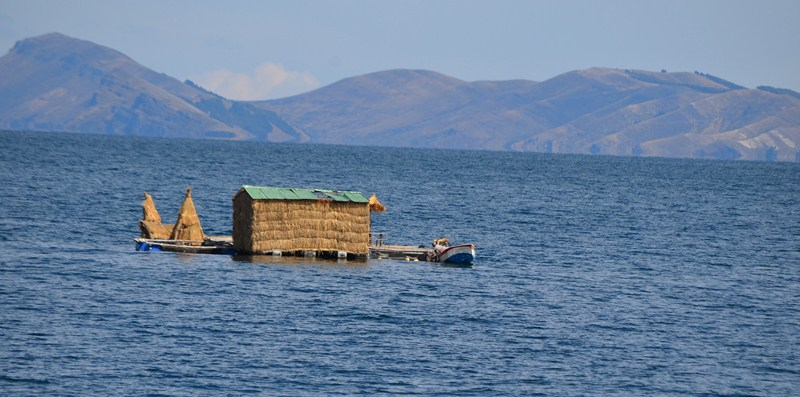 |
| Le lac Titicaca cote Bolivie |
.JPG){kind=link}
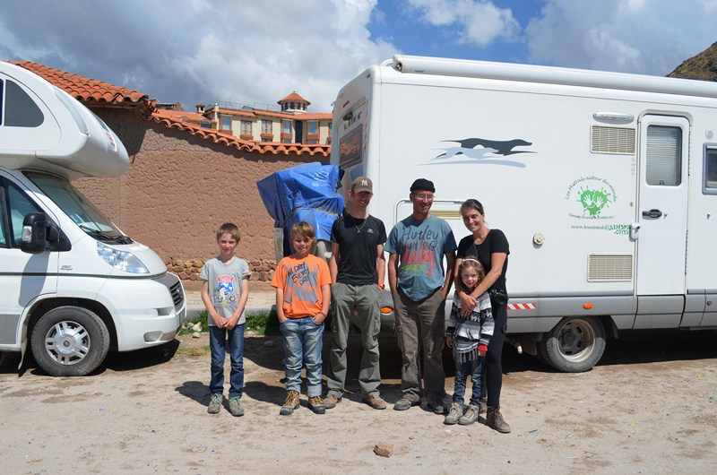 |
| Notre rencontre avec la famille en espadrilles . |
.JPG){kind=link}
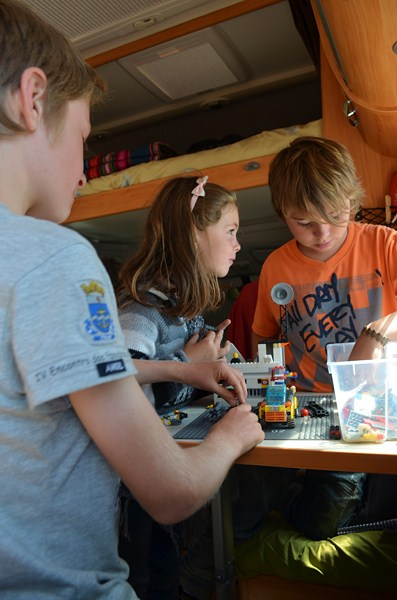 |
| les enfants s entendent vraiment très bien. |
.JPG){kind=link}
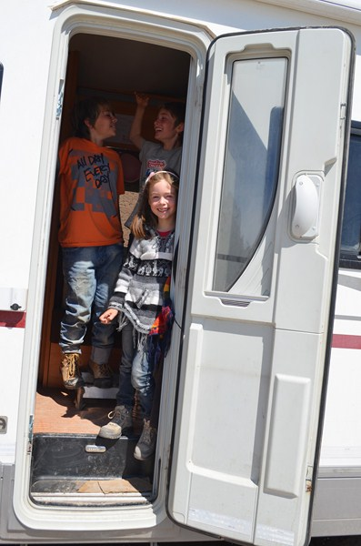 |
| Au revoir la famille en espadrille |
.JPG){kind=link}
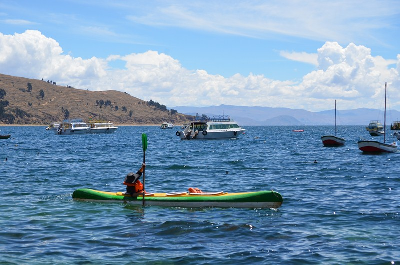 |
| Quelle chance de faire du kayac sur le Titicaca |
.JPG){kind=link}
.JPG){kind=link}
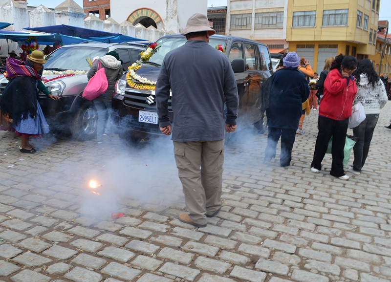 |
| le baptême des véhicules |
.JPG){kind=link}
.JPG){kind=link}
{kind=link}
 | |
| La Paz |
Pour arriver a la Paz nous devons prendre une barge et ça tangue pas mal.
.JPG){kind=link}
.JPG){kind=link}
.JPG){kind=link}
.JPG){kind=link}
.JPG){kind=link}
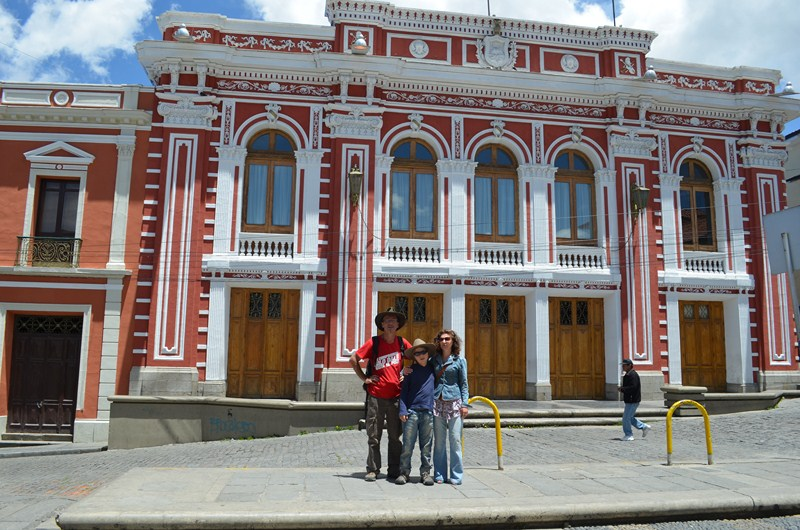 |
| Nous sommes heureux de retrouver Sabine et son fils Sam |
.JPG){kind=link}
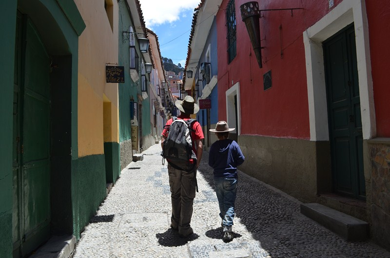 |
| La rue des musées |
.JPG){kind=link}
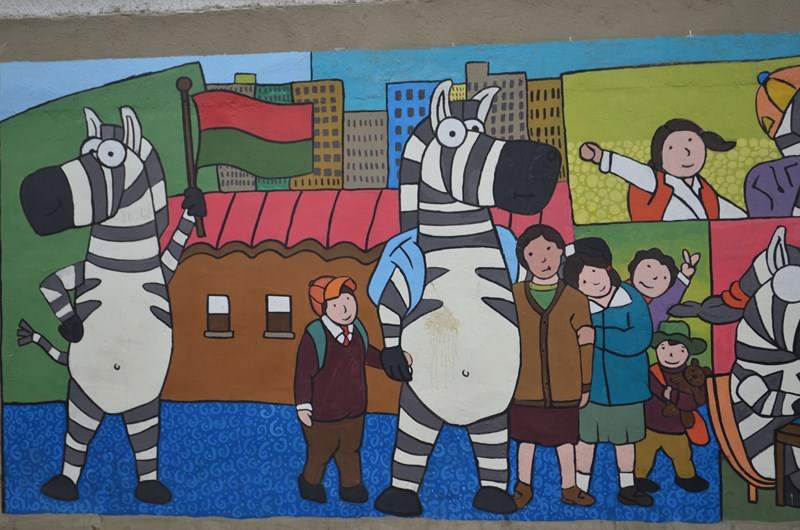 |
| Ici c est un zèbre qui fait traverser les enfants ,sage précaution. |
.JPG){kind=link}
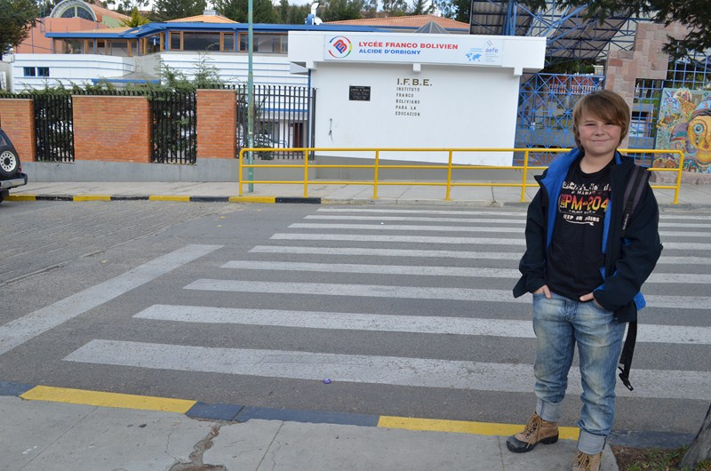 |
| Matisse attendant le zèbre mais il ne viendra jamais!!! |
.JPG){kind=link}
Le peintre a fait travailler les enfants sur ses peintures . Matisse est revenue émerveillé et fier d avoir un dessin signe de Mamani Mamani. Un grand merci a Sabine .
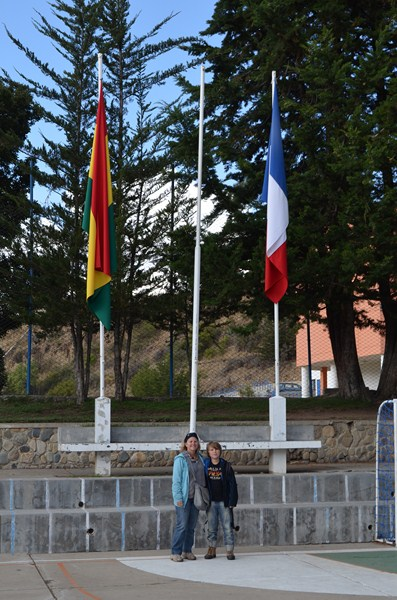 |
| le lycée Franco Bolivien de la Paz |
.JPG){kind=link}
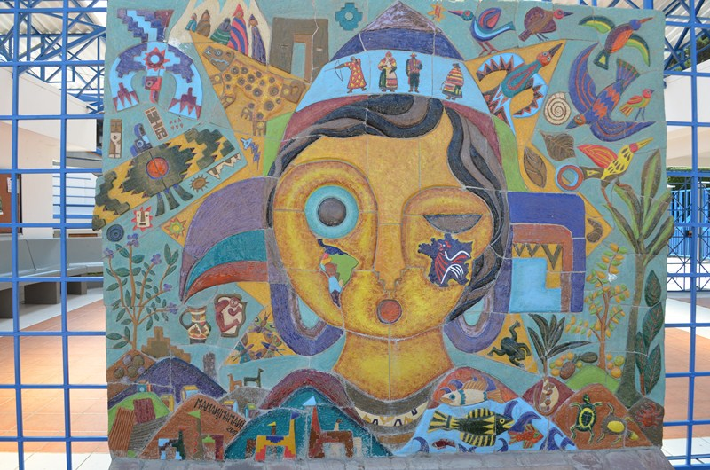 |
| Une fresque de Mamani Mamani a l entrée du lycée |
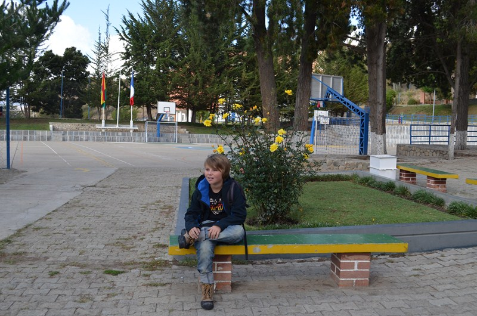 | |||
Le lycée est vraiment très agréable .
|
.JPG){kind=link}
.JPG){kind=link}
.JPG){kind=link}
.JPG){kind=link}
| Parc National Sajama | |||||||||||||||
| Le parc national Sajama situé dans la cordillère des Andes, au nord-est du département d Oruro , près de la zone frontalière avec le Clili . Son nom lui vient du volcan Nevado Sajama qui en fait partie. | |||||||||||||||
|---|---|---|---|---|---|---|---|---|---|---|---|---|---|---|---|
| Nous serons agréablement surpris par la beauté du cadre | |
|---|---|
| et par le calme qui y règne car très peu de touristes viennent a Sajama. |
| Nous ferons la connaissance d une famille Francaise Elizabeth et Damien et leurs 4 enfants ages de 18 a 2 ans. Ils voyagent sacs a dos durant 8 mois . Nous avons partage de très bons moments . |
|---|
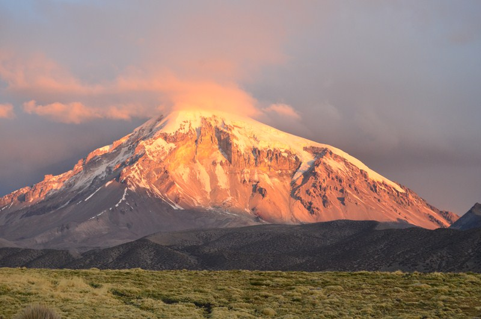 |
||
|---|---|---|
.JPG){kind=link}
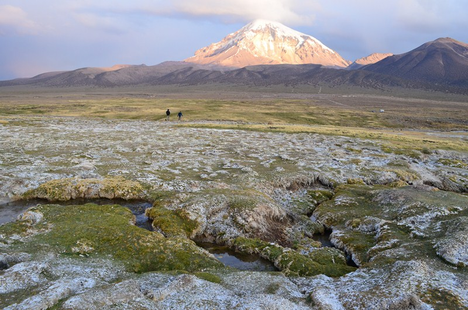 |
| Superbe couche de soleil. |
.JPG){kind=link}
.JPG){kind=link}
.JPG){kind=link}
.JPG){kind=link}
.JPG){kind=link}
.JPG){kind=link}
.JPG){kind=link}
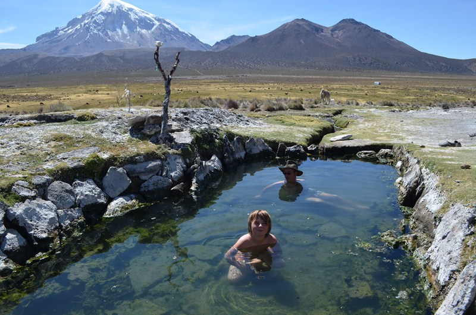 |
| Que du bonheur! l eau doit être a 38 degré. |
.JPG){kind=link}
.JPG){kind=link}
.JPG){kind=link}
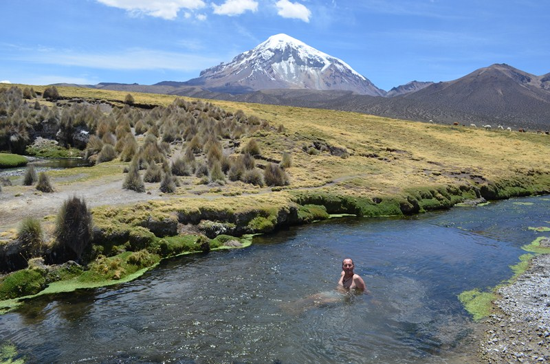 |
| La, elle doit etre a 27, 28 degré. |
.JPG){kind=link}
.JPG){kind=link}
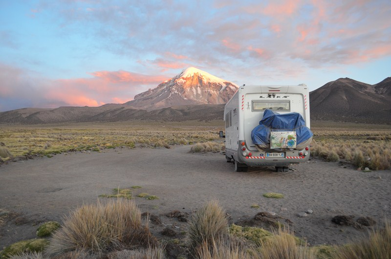 |
| Notre bivouac en pleine nature . |
.JPG){kind=link}
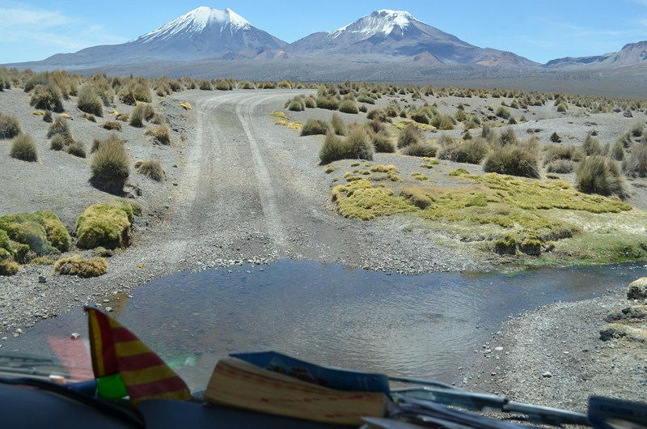 |
| La piste pour les geysers . |
.JPG){kind=link}
.JPG){kind=link}
.JPG){kind=link}
.JPG){kind=link}
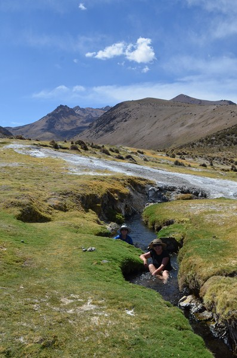 |
| Nous trouvons encore de quoi nous baigner. |
.JPG){kind=link}
.JPG){kind=link}
Entre la Paz et le Salar d Uyuni
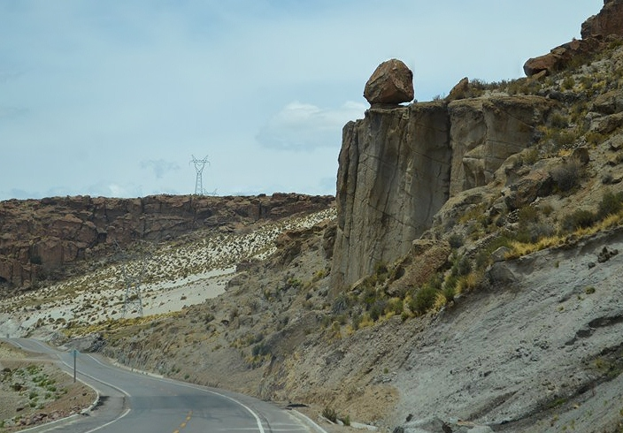 |
| Oups!ou est le coyote?Serions nous Bip Bip? |
.JPG){kind=link}
.JPG){kind=link}
.JPG){kind=link}
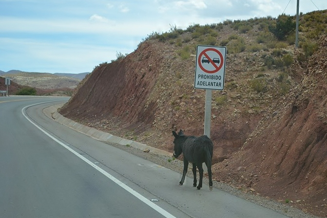 |
| Un âne peu en cacher un autre! Devons nous doubler? |
.JPG){kind=link}
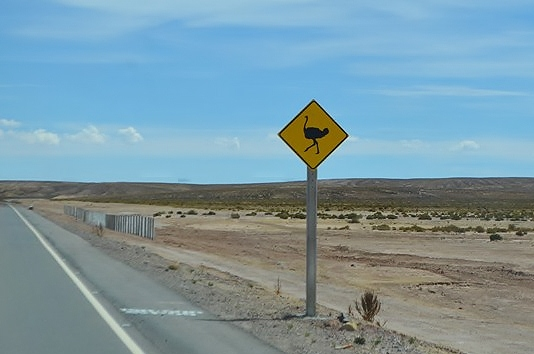 |
| Je savais bien que Bip Bip n était pas loin! |
.JPG){kind=link}
.JPG){kind=link}
.JPG){kind=link}
Le salar d'Uyuni est un vaste désert de sel situé sur les hauts plateaux du sud-ouest de la
Bolivie . Cette étendue de sel est située à 3658m d'altitude. Avec
une superficie de 12500 km2, elle constitue le plus vaste
désert de sel du monde et représente un tiers des réserves de
lithium exploitables de la planète. Ses dimensions sont de 150
kilomètres sur 100. Sa formation remonte à 10000 ans, quand
l'étendue d'eau salée était une partie du Lago Minchin, un
lac préhistorique géant. En s'asséchant, il laissa derrière lui
deux petits lacs encore visibles, le lac Poopo et le lac Uru Uru et
deux grands déserts de sel, le salar de Coipasa et le gigantesque
salar d'Uyuni. le salar d'Uyuni recèle 5,5 millions de tonnes de
lithium exploitables sur les onze millions de tonnes que comptent la
planète, de bore, de potassium, de magnésium, de carbonates (borax)
et de sulfate de sodium. Le sel est exploité, mais la production
annuelle d'environ 25000tonnes ne risque pas d'épuiser les 64
milliards de tonnes estimées du gisement(en effet, l'épaisseur du
sel varie de 2 à 120 mètres, selon les endroits.L isla del Pescado
(Incahuasi ) couverte de cactus millénaires certains ages de 1200 ans
se trouve au milieu de ce désert de sel. Une autre ile un peu moins
touristique se situe a une centaine de mètres de l ile d Icahuasi.
| Arrivée tant attendu dans le salar. |
.JPG){kind=link}
| Une très belle rencontre avec une famille Française en vélo. |
.JPG){kind=link}
| Nous ne sommes pas comestible! |
.JPG){kind=link}
| Matisse, on t a dit de ne pas manger tes nouveaux amis! |
.JPG){kind=link}
| Bon courage les amis |
.JPG){kind=link}
| Et bien ça y est! Matisse a conduit tout seul sur 110 km. |
.JPG){kind=link}
| sur l ile d Incahuasi |
.JPG){kind=link}
| Une petite offrande a la Pachamama |
.JPG){kind=link}
.JPG){kind=link}
| Faire du cerf volant sur le salar c est génial! |
.JPG){kind=link}
.JPG){kind=link}
| Le couche du soleil est merveilleux ,le ciel est un véritable arc en ciel |
.JPG){kind=link}
| Notre bivouac au pied de l ile d Icahuasi |
.JPG){kind=link}
Après notre départ de la Paz nous
filons sur Potosi. Enfin foncer, c est beaucoup dire ,car notre
moteur ne fonctionne pas a plein régime et les montées sont éprouvantes, surtout pour Michel qui souffre avec le moteur. A chaque arrêt Michel ouvre le capot et revient avec une pièce a la main en
nous disant "'On verra bien si ça marche mieux sans!!!""
Comprenez mon étonnement ! Pourquoi mettre des pièces dans ce moteur
qui ne servent a rien ??? Bon après tout c est comme l appendicite
chez nous.
Nous arrivons tard a Potosi et après
une bonne nuit de sommeil nous voila repartit pour Uyuni.
Cette ville est assez surprenante, un
peu ville fantôme.Elle est le lieu de départ des 4x4 qui emmènent les
touristes sur le salar. Nous dormons sur la place de Uyuni et demain
a nous le salar !
Le lendemain matin nous apercevons une
file de voitures et de camions devant le station d essence
plus de carburant! Les pompes sont vide
.Ils attendent le camion de livraison ! Nous saurons plus tard que l
attente a durée pour certain plus de 5 heures . Heureusement nous
avions assez de diesel pour faire le salar.
Nous suivons la piste qui va nous mener
vers l ile du Pescado (Incahuasi) avec ses cactus millénaires.
Nous laissons Matisse conduire tout
seul ,enfin avec nous a cote! Il se débrouille comme un chef !
Nous dormirons au pied de l ile du
Pescado (la touristique) ,mais apres17 heures
les 4x4 repartent !
Le couche de soleil est extraordinaire
d autant plus que la lune se lève de l autre cote en nous baignant d
une lumière incroyable . Les mots ne sont pas assez fort pour décrire ce tableau .
Nous sommes dans état de plénitude et d émerveillement.
Heureux et émus nous profitons de
cette belle nuit de pleine lune pour aller marcher quelques kilomètres sur le salar .
.JPG){kind=link}
| Quelle chance ,c est la pleine lune |
.JPG){kind=link}
| Enfin nous ressortons les vélos! |
.JPG){kind=link}
| Je sais, je suis l antithèse des cyclistes avec mon vélo électrique. |
.JPG){kind=link}
| En plus le salar est bourre de lithium! ça plait bien a mes batteries. |
.JPG){kind=link}
.JPG){kind=link}
.JPG){kind=link}
| le cimetière de train a vapeur d Uyuni |
.JPG){kind=link}
| Nous avons emmené Diogene (notre camping-car) pour lui montrer comment il allait finir si il nous laisse tomber! |
.JPG){kind=link}
.JPG){kind=link}
.JPG){kind=link}
.JPG){kind=link}
.JPG){kind=link}
Les mines de Potosi
.JPG){kind=link}
Les mines de Potosi en Bolivie,nichées a 4000m d altitude au flanc d une montagne truffée d argent,de zinc et de plomb,ont fait la richesse de l empire espagnol des Indes a partir du XVI ieme siècle.Richesse qui se paiera de plusieurs millions de morts. Aujourd’hui Potosi est un haut lieu du patrimoine mondial mais même au ralenti, la mine continue de dévorer des vies humaines .
| La tradition veut que nous apportions des présents aux mineurs . |
.JPG){kind=link}
| l entrée de la mine sur les hauteurs de Potosi |
.JPG){kind=link}
.JPG){kind=link}
Le puits est a 80 m de profondeur |
.JPG){kind=link}
Ce jeune mineur attend l explosion des dynamites |
.JPG){kind=link}
.JPG){kind=link}
Un sourire en enfer! |
.JPG){kind=link}
El "diablo" Nous lui déposons des offrandes afin de conjurer le mauvais le sort ! |
.JPG){kind=link}
.JPG){kind=link}
Les mineurs de Potosi travaillent
beaucoup pour peu d’argent en espérant tous les jours tomber sur
une veine qui les rendra riches. En effet, comme il s’agit de
coopératives privées, la personne qui trouve une veine garde une
très bonne part des revenus de la veine. Cela les motive bien plus
que de travailler dans les mines d’Etat. Bien sûr cela n’arrive qu’exceptionnellement. La dernière fois une veine très riche en
pyrargyrite (Ag3SbS3) et miargyrite (AgSbS2)
a été découverte par hasard en 1998. Le mineur qui l’a trouvé
est devenu vraiment très riche. Les veines plus petites, mais qui
permettent de payer sa maison, sont trouvées plus souvent. Toutefois
pour la majorité des mineurs, cela n’arrivera jamais.
Après avoir traverse les rues de
Potosi vêtu de notre équipement de mineur, nous grimpons dans un petit
bus accompagne de notre guide (qui parle le français et le Quicha).
Nous nous arrêtons acheter des petits
cadeaux pour les mineurs, feuilles de coca,cigarettes,boisons, et un bâton de dynamite avec sa mèche et son détonateur.La mine est située sur les
flancs de la montagne de Potosi .
Nous nous enfonçons dans les entrailles
de la terre et rapidement nous rencontrons des mineurs .
Nous avons lu pas mal de livres et vu
des reportages sur les conditions de travail des mineurs .Mais le voir de ses propres yeux c est une autre histoire.
Qui ne se souvient pas de germinal !
La dure réalité nous saute au visage ou plutôt au tripe, nous interrogeons notre guide sur le bien fonde de
notre présence ici ,elle nous explique que c est le souhait des
mineurs . Un petit pourcentage sur les billets achetés est reverse a
la coopérative des mineurs.
Nous montons ,descendons ,nous marchons
dans la boue ,nous prenons une galerie a droite puis a gauche je
suis déjà perdu!
Nous laissons le passage a des hommes qui poussent
des wagons plein .
Courbés, mâchouillant de la coca
,le visage couvert de poussière ,ils s arrêtent devant nous et nous remercie avec un sourire pour les
petits présents puis ,rapidement repartent vider leur chargement a l extérieur de la mine.
Nous nous enfonçons encore un peu ,un mineur est assis il a l air jeune.
Nous discutons un peu avec lui ,il a 21
ans et travail depuis 5 ans dans cette mine .Il nous explique
que son patron est en train d
installer des dynamites 24 au totale .Elles exploserons dans
une demi heure ...
On se dit cela nous laisse le temps
de sortir de la mine, mais notre guide nous propose de rester a l intérieur pour écouter les explosions !!! Pas très rassure quand même ,nous nous calons dans un recoin de la mine et attendons . Une première explosion a lieu suivi de plusieurs autres .Une explosion se
passe en deux temps d abord le bruit du déclencheur et l explosion
elle même. Un bruit sourd suivi d un léger tremblement nous
parvient de la ou nous sommes .
On est stupéfait de vivre cette expérience !
j imagine les deux mineurs qui se
trouvent pas très loin des explosions.
Nous ressortons après environ 2heures
passes dans la mine,a l intérieur difficile d avoir la notion du temps.,
Nous croisons des mineurs qui se hâtent de
sortir car pour eux la journée est finie, certains commencent a
3heures du matin et finissent vers 3 ou 4 heures de l après midi .
Pas étonnant qu ils ne tapent pas la causette avec nous .
Les équipes de mineurs sont en généralement composées d un chef , c est le plus expérimenté .Il doit payer ses équipiers environ 2 ou 3 hommes qui percent et 3 qui remontent a la surface le minerai .Le chef paye les taxes a l état, les équipements et le matériel. Les ouvriers gagnent entre 200 et 800 bol (de 20 a 80 euros) par semaine selon la quantité et la qualité du minerai.
Les femmes travaillent le plus souvent a l extérieur, elles trient le minerai.
Les enfants, certains seulement ,viennent après l école et durant les vacances aider leur père dans
la mine ...
La plupart du temps les concessions se
passent de génération en génération . Les mineurs commencent a
travailler a l age de 14 ans et beaucoup meurent vers l age de 47 ans
de maladie pulmonaire ou d accident dans la mine.
Les enfants des mineurs nous attendent a la sortie
de la mine et nous propose des minéraux. J avais un peu d appréhension quant a savoir quelle attitude adopter ,mais très vite
ces enfants m ont surpris et touche .
C est avec respect et gentillesse qu
ils nous ont aborde .
Nous leurs souhaitons bonne chance!
Difficile de ne pas être secoue par cette expérience. Personnellement je penserai toujours a
ces mineurs de Bolivie, surtout lorsque
l envie de me plaindre sur la dureté et l injustice de la vie me prendra
Sucre


Sucre est la capitale constitutionnelle de la Bolivie, et abrite le siège de la Cour suprême.
Elle est également la capitale du departement de Chuquisaca et le chef-lieu de la province d Oropeza. Sa population s'élevait à 256 225 habitants en 2007.Ce joyau d'art baroque et de la Renaissance est la plus européenne des cités de Bolivie et sans doute l'une des plus belles d'Amérique Latine. Fondée sur ordre de Pizarro, en 1538, Sucre était destinée à devenir la résidence et le centre de la bourgeoisie espagnole.
Nous ferons la connaissance d un Français qui est le proprio du petit Parisien une petite tienda ou il est possible de manger (il fait de merveilleuse rillettes ).
Sucre
Sucre est la capitale constitutionnelle de la Bolivie, et abrite le siège de la Cour suprême.
Elle est également la capitale du departement de Chuquisaca et le chef-lieu de la province d Oropeza. Sa population s'élevait à 256 225 habitants en 2007.Ce joyau d'art baroque et de la Renaissance est la plus européenne des cités de Bolivie et sans doute l'une des plus belles d'Amérique Latine. Fondée sur ordre de Pizarro, en 1538, Sucre était destinée à devenir la résidence et le centre de la bourgeoisie espagnole.
Du point de vue architectural, Sucre est restée figée comme une carte postale du 19 éme siècle, ce qui fait son charme.
Cependant, un tremblement de terre, en 1948 obligea à rénover une grande partie de la ville.
Sucre est considérée comme la plus belle ville de Bolivie, mais
outre sa beauté et son atmosphère de 18 & 19 éme siècle, Sucre
présente aussi l'intérêt d'être la capitale historique de la Bolivie.
Nous avons trouve un hôtel en plein centre de Sucre et cerise sur le gâteau le camping -car est stationne juste au dessous de notre chambre. Nous feterons les 11 ans de Matisse un peu en avance mais au moins nous sommes sur de trouver un bon petit resto .Nous ferons la connaissance d un Français qui est le proprio du petit Parisien une petite tienda ou il est possible de manger (il fait de merveilleuse rillettes ).
Les 11 ans de Matisse
.JPG){kind=link}
La joie de Matisse fait plaisir a voir!!! |
.JPG){kind=link}
.JPG){kind=link}
Le Marche de Tarabuco
Depuis plus de 4000 ans, le tissage est une des expressions les plus complexes de la région andine.
Ici, vêtements et tissus utilisés restituent l’identité et la culture de la population. Certains tissus sont de véritables textes exprimant des pensées qui vont du concret à des sujets plus mystiques et complexes. En Bolivie, deux villages se distinguent : Jalq'a et Tarabuco. Ils ont su garder et même perfectionner leur technique de tissage au point d'ériger leur artisanat en œuvres d'art, exposé et vendu en tant que telles. L'apprentissage du « Pallay », technique de tissage, se fait dès le plus jeune âge par l'observation. A 5 ans les petites filles ont leur premier contact avec le métier à tisser. En raison de l'effort de précision et d’acuité visuelle que ce travail représente, les femmes du village ne peuvent y consacrer plus de 5 heures d’autant qu ‘elles sont aussi responsables des tâches domestiques. Il n'existe aucun modèle à suivre pour l'élaboration de ces tissus, tout sort de l'imagination de l'artiste et chaque œuvre est unique.Les tissus de Jalq'a se caractérisent par la prédominance de figures et une absence quasi totale de formes géométriques et de symétrie. Ces tissus donnent la vision d'un univers chaotique, obscure et sans contraste.Les tissus de Tarabuco au contraire sont lumineux, organisés, symétriques. Le monde décrit est ordonné, clair et évident.
.JPG){kind=link}
.JPG){kind=link}
.JPG){kind=link}
.JPG){kind=link}
.JPG){kind=link}
.JPG){kind=link}
.JPG){kind=link}
.JPG){kind=link}
.JPG){kind=link}
.JPG){kind=link}
.JPG){kind=link}
.JPG){kind=link}
.JPG){kind=link}
.JPG){kind=link}
.JPG){kind=link}
.JPG){kind=link}
.JPG){kind=link}
.JPG){kind=link}
Au petit Parisien a Sucre |
.JPG){kind=link}
.JPG){kind=link}
.JPG){kind=link}
.JPG){kind=link}
.JPG){kind=link}
.JPG){kind=link}
.JPG){kind=link}
.JPG){kind=link}
Sur la Route du Che
Un peu d histoire
Soyez
toujours capable de ressentir au plus profond de vous même, toute
injustice commise, à l'égard de qui que ce soit, dans quelque
partie du monde que ce soit. C'est la plus belle vertu d'un
révolutionnaire."

.JPG){kind=link}
.JPG){kind=link}
.JPG){kind=link}
.JPG){kind=link}
.JPG){kind=link}
| La piste est magnifique |
.JPG){kind=link}
.JPG){kind=link}
.JPG){kind=link}
.JPG){kind=link}
.JPG){kind=link}
Ernestito Guevara naît le 14 juin 1928 avec un mois d'avance en Argentine, à Rosario de la Fe, dans une famille aisée, lettrée, mais définitivement progressiste. Ses parents sont hors norme et le Che grandit dans un environnement ou « passion de la justice», «haine du fascisme», « indifférence religieuse », « intérêt pour la littérature et amour de la poésie », « méfiance envers l'argent » sont des repères. Sa mère embrasse la cause féministe et fait scandale à Buenos Aires pour ses cheveux courts et son attitude de femme moderne et émancipée, et son père délaisse ses études d'architecte pour aller lancer une affaire de culture de mate (thé argentin) dans le nord est du pays.
La route du Che, ça se mérite!!!
Partant de Sucre nous rattrapons une piste poussiéreuse. Puis encore des heures à zigzaguer entre les nids-de-poule pour grimper jusqu'au village de La Higuera (figuier en espagnol) C est peut-être un signe pour nous qui sommes de Sollies-Pont la capitale de la figue en France., Autoproclamé La Higuera del Che en 1997. À perte de vue, pas âme qui vive dans ces montagnes raclées jusqu'au caillou. On a beaucoup écrit sur cette région. En omettant sa beauté, âpre. Nous ne sommes plus qu a 5 ,6 Km d Higuera mais la piste c est effrondree avec les pluies de ces derniers jours des tractos pelles s activent pour refaire un passage ,Nous passerons mais avec un peu d appréhension !!!
Nous nous arrêterons a la casa del telegrafista chez Ode et Juan durant plusieurs jours, aujourd hui le 5 décembre c est les 11 ans de Matisse .
David le fils de Juan propose a Matisse de l initier a l escalade, cadeau
d anniversaire !
Merci David.
Matisse se rappellera de son 11ieme anniversaire! Faire de l escalade dans cet endroit historique que demander de plus !
Notre séjour à la Higuera restera pour nous des moments extraordinaire ,un cocktail comme on les aiment !Histoires , Mythe,amitié, joie, authenticité, nature.
Mais qu'était-il donc venu faire dans cette galère, l'inoxydable guérillero ?
C est en décembre 1964 que le Che a posé son sac à Cuba. Depuis octobre 1960, il enchaîne les voyages en Chine, URSS, Europe, Inde, Algérie, Amérique latine... Guevara et son béret sont devenus les emblèmes planétaires de la révolution. L'homme, pourtant, n'a guère le goût du pouvoir. Les Soviétiques englués dans une politique de cohabitation pacifique avec les États-Unis l'agacent. Voilà cent jours qu'il a quitté La Havane. Sa tournée mondiale s'est prolongée au-delà de la durée initialement prévue. Le 9 décembre 1964, il prononce à New York, devant les Nations-Unies, un discours sur la libération de l'Amérique latine. Ce sera sa dernière apparition publique. Un mois plus tard, en janvier 1965, le second personnage de l'État cubain disparaît de la scène politique internationale. Officiellement, il a renoncé à sa charge de ministre pour s'en aller couper la canne à sucre. En réalité, il se bat au Congo où il tente en vain d'implanter une guérilla. Le 3 octobre 1965, Fidel lit aux Cubains le message d'adieu du Che : « D'autres terres du monde réclament la contribution de mes modestes efforts. » La guérilla congolaise prendra des allures de naufrage.
En Occident, le Che passe pour mort ou fou
Le 3 novembre 1966, il se présente à La Paz, porteur d'un passeport uruguayen. Guevara tente de ralier le parti communiste bolivien qui tarde à se joindre à la future guérilla. Finalement, Mario Monje, son secrétaire général, pose des conditions inacceptables pour le Che qui s'engage dans le maquis bolivien sans appuis locaux. Comment l'auteur de La guerre de guérilla a-t-il pu commettre une telle erreur ? L'âge qui vient, la hâte de créer un foyer révolutionnaire dans l Argentine voisine, son pays natal, sont sans doute les raisons de cette imprudence. Le Che appelle de ses vœux un embrasement général : « Deux, trois, plusieurs Vietnams ». La formule est restée célèbre. La guérilla s'installe dans la région inhospitalière de Camiri. Une poignée d'hommes accompagnent Guevara. Utopique ? Pas si sûr.
Nous sommes en Amérique latine, un continent conquis par des aventuriers à la tête de quelques centaines de conquistadors. Cortès, Valdivia, Prestes au Bresil , les précédents sont nombreux. Le Che n'a pas oublié qu'après quelques jours, les quatre-vingt-deux hommes embarqués sur le Granma n'étaient plus que douze. En Occident, les bruits les plus fous courent sur le Che. On le dit mort, fou, emprisonné par Fidel. Combattant au Vietnam . Le comandante est un fantôme. Pas pour longtemps. Escarmouches, désertions, trahisons mettent en lumière la guérilla. Le 17 avril 1967, la colonne est coupée en deux. Les hommes de Guevara s'épuisent à tenter de se regrouper. Tania, l'espionne du réseau à La Paz, a été démasquée. Des documents compromettants ont été découverts dans son véhicule.
Le traître, le saint et les marchands du temple
Régis Debray, philosophe français, a rejoint la guérilla. Il est arrêté avec le journaliste Circo Busto , alors qu'il tente de porter un message à Sartre de la part du Che. Le boucher de Lyon, le nazi Klaus Barbie, assiste aux interrogatoires. Sous la torture, Bustos craque. Le Che est localisé. Des instructeurs étatsuniens venus du Laos forment un bataillon de rangers boliviens. Les maquisards tombent les uns après les autres. Au début de l'automne 1967, Guevara et ses hommes sont encerclés par des milliers de soldats aux alentours de La Higuera. Le 8 octobre 1967, le Che est blessé dans la Quebrada du Churo. Il est capturé et assassiné sur ordre du président bolivien Barrientos, dans l'école de La Higuera, le 9 vers 13 heures.
La Higuera n'est qu'un hameau d'une dizaine de maisons aux tuiles recuites par le soleil. Dieu lui-même n'est pas arrivé jusqu'ici. Pas d'église. Rien que des paysans pauvres. Des pèlerins, un flux ténu mais régulier. Le 14 juin 2006, jour anniversaire de la naissance du Che, le président Evo Morales est venu.
Aude et Jean, photographes, sont arrivés en 2003, par hasard. Ils ont acheté la maison du télégraphiste où les militaires se partagèrent les maigres possessions du Che. En ont fait un gîte. Jean écume les canyons, à la recherche de traces des affrontements : « Le monde entier vient ici. Des pèlerins argentins, européens, brésiliens. Des vieux soixante-huitards, des altermondialistes...»
Pèlerin. Le mot est lâché et avec lui, sa cohorte d'allégories christiques. Rien ne manque au récit de son martyre. Prisonnier, le Che épuisé s'effondre, un soldat l' aide à gravir le sentier. Judas l'a trahi, en la personne d'un paysan qui l'a surpris dans son champ. Même les épines sont au rendez-vous, qui déchirent peau et vêtements, tout au long de la sente qui descend vers la Quebrada du Churo. Les stations du Golgotha guévarien sont signalées par des pierres marquées de graffitis. Stations réelles ou imaginaires, qu'importe, seule vaut la légende en ces lieux.
Retour au village. Les marchands du temple sont là. Au pied de l'autel - c'est l'appellation officielle ! - sur la petite place, l'un d'eux, Don Manuel , est en verve. D'une voix monocorde, il déroule les litanies idoines : « Ils nous ont dit qu'ils combattaient pour nous. Ils ont acheté des vivres, Guevara a payé 60 bolivianos pour la viande. Ils ont distribué des bonbons aux enfants. C'était la fête. C'est Pedro Pena qui les a dénoncés, à cause de cette histoire de champ de patates. Le lendemain, 1600 soldats sont arrivés. Il y a eu une fusillade. Vers 15 heures, ils l'ont amené. Le lendemain, ils l'ont tué vers 13 heures... Ce sera 20 bolivianos, s'il vous plaît ! » L'école a été transformée en musée.
La guerre des reliques aura bien lieu le corps de Guevara fut transporté par hélicoptère à l'hôpital Senior de Malta de Vallegrande, pour y être exhibé à la presse. Là encore, l'inconscient catholique latino-américain a été mis à contribution. Qui ne se souvient de ces images montrant le Che, tel le Christ dans la descente de croix du peintre italien Mantegna ? Susana Osinaga Robles, alors âgée de 34 ans, fut chargée de laver le corps. « On nous avait demandé de nous préparer, car le corps du Che allait arriver . La laverie de l'hôpital baigne dans une lumière d'autel. Le lavoir est toujours là. Sur les murs, des graffitis laissés par les pèlerins.
Nul pèlerinage ne saurait s'achever sans la visite au tombeau. Les emplacements des corps, celui du Che et de ses compagnons, sont marqués par des stèles. Leurs restes reposent à Santa Clara. Les Cubains s'affairent à la construction d'un bâtiment destiné à recouvrir le site. Le 7 juillet 1997, après une infructueuse campagne de fouilles argentines, une équipe cubaine a mis au jour les ossements du Che. Leur authenticité n'a pas tardé à être mise en doute. Une antienne entamée dès l'annonce de sa mort. En octobre 1967, l'écrivain français Jean Lartéguy écrivait dans Paris Match : « Il n'est pas sûr que ce soit lui, il lui ressemble trop... » La découverte du corps est venue, il est vrai, à point nommé, juste pour le 30e anniversaire de la mort du Che. Carlos Sosa Moro travaille à un programme de développement touristique avec la mairie de Vallegrande, "La route du Che". « Les gens se demandent pourquoi les Cubains ont emporté le corps, alors que les touristes affluaient pour le voir. Après tout, il est mort ici. D'ailleurs, ce n'était peut-être pas lui qu'ils ont trouvé, il est peut-être encore là. » La guerre des reliques. Il ne manquait plus qu'elle.
Au-delà de la légende, quel genre d'homme était Ernesto
Guevara ?
Un homme à multiples facettes ! Le médecin qu'il
était m'a ausculté alors que j'étais un paysan illettré de 15
ans, dans la Sierra Maestra. Il était aussi obsédé par
l'éducation. Le pédagogue en lui m'a appris à lire et à écrire.
Après la révolution, à La Havane, quand je manquais ses cours
particuliers du samedi, il confisquait mes clés de voiture !
On
dit qu'il avait une volonté hors du commun...
C'est vrai.
Quand il a été nommé à la présidence de la Banque de Cuba, il a
dû intégrer des notions qui lui faisaient défaut. Comme il
travaillait toute la journée, pour ne pas s'endormir, il avait
planté un clou dans le mur derrière sa tête, et il lisait debout.
À chaque fois qu'il s'assoupissait, le sursaut faisait cogner sa
tête contre le clou et la douleur le réveillait.
Quand
l'avez-vous vu pour la dernière fois ?
C'était au fond du
canyon du Churo. On a appris la nouvelle de sa mort en écoutant
notre petite radio à piles. Nous avons mis longtemps à nous
échapper. Nous sommes passés par la Cordillère des Andes, jusqu'au
Chili où Allende nous a acheminés vers Tahiti. Puis la France nous
a récupérés. À Paris, le Général de Gaulle nous a même reçus
à l'Élysée pour un petit-déjeuner. Il voulait s'entretenir avec
nous de Régis Debray.
.JPG){kind=link}
.JPG){kind=link}
.JPG){kind=link}
.JPG){kind=link}
.JPG){kind=link}
.JPG){kind=link}
.JPG){kind=link}
.JPG){kind=link}
.JPG){kind=link}
.JPG){kind=link}
.JPG){kind=link}
.JPG){kind=link}
.JPG){kind=link}
.JPG){kind=link}
.JPG){kind=link}
.JPG){kind=link}
.JPG){kind=link}
Quelle belle salle de classe! |
.JPG){kind=link}
Matisse le guérilleros |
.JPG){kind=link}
.JPG){kind=link}
.JPG){kind=link}
.JPG){kind=link}
.JPG){kind=link}
.JPG){kind=link}
.JPG){kind=link}
.JPG){kind=link}
.JPG){kind=link}
.JPG){kind=link}
.JPG){kind=link}
.JPG){kind=link}
.JPG){kind=link}
.JPG){kind=link}
Matisse et Inti |
.JPG){kind=link}
Ça y est! Michel sait danser la bourré Bolivienne! |
.JPG){kind=link}
.JPG){kind=link}
.JPG){kind=link}
.JPG){kind=link}
.JPG){kind=link}
.JPG){kind=link}
.JPG){kind=link}
| Les Boliviens nous accueillent avec beaucoup de sympathie et de convivialité! |
.JPG){kind=link}
.JPG){kind=link}
Le repos des guerriers! |
.JPG){kind=link}
Allez Matisse tu vas y arriver! |
.JPG){kind=link}
C est avec beaucoup d émotion que nous quittons Ode ,Inti, David |
.JPG){kind=link}
la piste n est pas encore bien sèche ! Nous voila bien! |
.JPG){kind=link}
Heureusement David et Ode nous tractent , nous sommes sauves! |
.JPG){kind=link}
.JPG){kind=link}
Sur la route vers Valle Grande nous trouvons des cèpes ! Encore merci a David pour l info! |
.JPG){kind=link}
.JPG){kind=link}
Le Lavoir où on lava le corps du Che |
.JPG){kind=link}
.JPG){kind=link}
.JPG){kind=link}
.JPG){kind=link}
.JPG){kind=link}
.JPG){kind=link}
Nous reprenons la route pour la Paz |
.JPG){kind=link}
.JPG){kind=link}
.JPG){kind=link}
.JPG){kind=link}
.JPG){kind=link}
la Paz |
.JPG){kind=link}
Aucun commentaire:
Enregistrer un commentaire